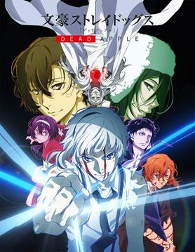
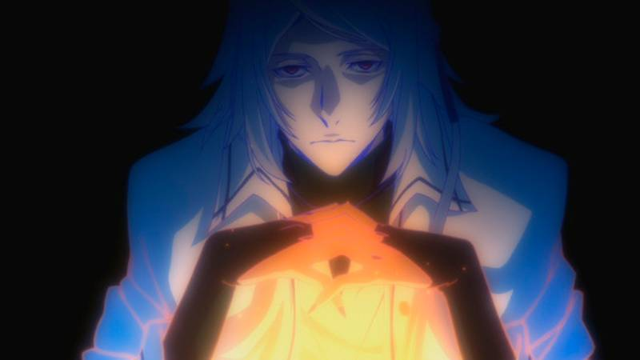
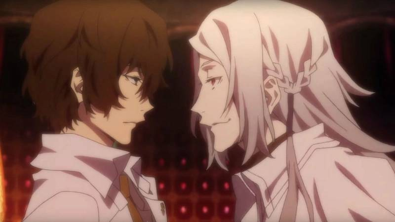
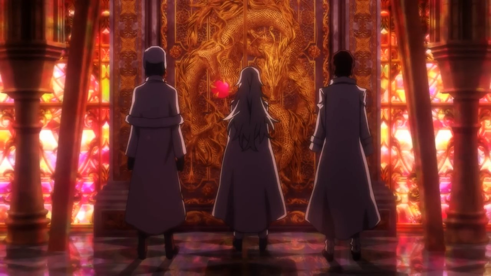

Bungou Stray Dogs
Pelicula
Sinopsis
Los usuarios de habilidad de todo el mundo se están suicidando repentinamente uno tras otro, en todos los casos después de que aparece una extraña niebla en la escena. A pedido de Ango Sakaguchi, la Agencia de detectives armados se dirige a investigar a Tatsuhiko Shibusawa, un usuario avanzado que se hace llamar "coleccionista" y un hombre sospechoso de estar vinculado al incidente.
Resumen
La noche antes de que termine el sangriento Conflicto de la cabeza de dragón después de 88 días, Dazai y Chūya de Port Mafia se enfrentan a un hombre de pelo blanco. Chūya le exige que devuelva a sus compañeros, solo para que el hombre bromee diciendo que se han suicidado. Montado de furia, Chūya activa la Corrupción y causa estragos, mientras que un hombre vestido con ushanka mira divertido cerca. Seis años después, en la actualidad, Kunikida informa a la Agencia (sin Dazai) sobre los usuarios de habilidades en todo el mundo asesinados por sus propios poderes después de que surge una niebla misteriosa, reconocida como suicidios en serie. Por lo tanto, la División Especial de Poderes Inusuales solicita a la Agencia que capture a Tatsuhiko Shibusawa, un sospechoso relacionado con el caso. Por la noche, Kunikida y Tanizaki salen para reunirse con un informante de la División Especial, pero pronto encuentran al hombre muerto. También notan una manzana perforada con un cuchillo en la escena. Yokohama está siendo envuelta en la niebla.
En el Bar Lupin, Dazai charla con Oda a solas sobre la reciente tendencia al suicidio de las manzanas. Oda se entrega a su charla típica, y Dazai elogia el pensamiento interesante de Oda como siempre. Dazai pronto toma una pastilla y deja una manzana perforada con un cuchillo en el mostrador. Afuera, Ango sospecha que Dazai trajo a Shibusawa a Yokohama, justo cuando este último genera la niebla desde atrás. Atsushi sueña con el personal del orfanato, detrás de ellos aparece una puerta misteriosa donde emana niebla. Más tarde, él y Kyōka encuentran las calles envueltas en la misteriosa niebla, donde casi todos han desaparecido. También se dan cuenta de que no pueden activar sus habilidades. En el camino, los dos encuentran a Kunikida herido y se refugian cerca. Mientras Demon Snow los persigue, Kunikida les dice a los dos que los usuarios de habilidades no se suicidan, sino que son asesinados por sus propias habilidades. Pronto llegan a la Agencia saqueada y se comunican con Ango, quien los dirige a Mukurotoride donde se ha localizado Shibusawa y les pide que lo eliminen. Cuando Ango les informa que Dazai parece estar con Shibusawa, les implora que salven a Yokohama, antes de que la llamada se corte. Ango luego ordena a un agente que convoque al usuario de habilidad A5158, mientras que Kunikida lucha contra su habilidad para permitir que Atsushi y Kyōka se escapen. En Mukurotoride, se revela que Dazai, Shibusawa y Fyodor son colaboradores, aunque desconfían mutuamente. Mientras Demon Snow alcanza a Atsushi y Kyōka, Akutagawa es empujado por su habilidad, y los tres son acorralados por sus respectivos poderes. Mientras huye a un pasaje de emergencia, Akutagawa les informa que derrotar sus habilidades es la única forma de que sus poderes regresen. Aunque sus ideas inicialmente entran en conflicto entre sí, los tres terminan pasando por el pasaje por completo. Shibusawa muestra a Dazai y Fyodor su colección de varias habilidades cristalizadas gracias a la información que obtuvo de Fyodor. No obstante, lamenta no tener la "habilidad máxima" en su colección.
Atsushi, Kyōka y Akutagawa regresan a las calles a través del pasaje, donde luchan contra sus habilidades una vez más. Atsushi supone que destruir la joya incrustada en sus habilidades puede derrotarlos, lo que los tres logran hacer. Kyōka y Akutagawa recuperan sus poderes, pero Atsushi no. Akutagawa y Kyōka insinúan cómo su habilidad no regresa debido a su relación tensa con él, después de lo cual se dirigen a la base enemiga cercana. A5158, que resulta ser Chūya, llega por pedido de Ango. Aunque reprende a la División Especial por encubrir los crímenes de Shibusawa en el Conflicto de la Cabeza del Dragón después de que su plan de usarlo para terminar la disputa fracasara, acepta el trabajo con la vida de Ango para pagar a cambio. Sin Shibusawa, Dazai y Fyodor revelan su alianza entre ellos. Se les ocurre una manera de matar de hambre a la niebla de su energía, que Dazai logra iniciar con su habilidad de anulación. Habiendo anticipado esto, Shibusawa lo apuñala con un cuchillo envenenado y adquiere su poder. Para su consternación, la habilidad anuladora de Dazai produce una singularidad con la habilidad de fusión. La puerta se le aparece a Atsushi cuando Fyodor le dice a Shibusawa que sus recuerdos perdidos nunca regresarán. Cortando a través de Shibusawa para hacerle recordar su muerte, Atsushi abre la puerta y ve lo que sucedió en el pasado: cuando Shibusawa trató de expulsar a Bestia bajo la luz de la Luna, la "habilidad máxima", el niño se transformó en el tigre y arañó a través del cráneo de Shibusawa, matándolo. Tras su muerte, Shibusawa heredó su propia habilidad cuando se separó de su cuerpo, aunque a costa de sus recuerdos. Al activar la Corrupción, Chūya se enfrenta al Dragón, la encarnación del caos de habilidades especiales.
Mientras Fyodor reconoce que su habilidad nunca lo dejó en la niebla porque el crimen y el castigo se complementan, un dragón emerge de las habilidades encarnadas. Chūya llega a Mukurotoride para someter al objetivo, aunque a Ango le preocupa que Chūya tenga que usar Corrupción sin Dazai. Chūya le asegura que Dazai todavía está dentro, antes de colgar. Mientras lucha contra el dragón, logra entrar en su núcleo, donde encuentra a Dazai y lo golpea, revelando que previamente había tomado una pastilla antídoto. Dazai anula la Corrupción, debilitando a Chūya por sus efectos. No obstante, la niebla aún no se ha disipado, y Fyodor revive astutamente a Shibusawa convirtiéndolo en la singularidad. La niebla se esparce y se estima que envuelve el globo en 168 minutos. La Orden de la Torre del Reloj, una organización talentosa inglesa, contacta a la División Especial que han desplegado un usuario de habilidad de incineración para destruir Yokohama y prevenir la propagación de la niebla. Mientras tanto, Fukuzawa y Mori recuperan sus poderes al derrotar las habilidades del otro. Akutagawa y Kyōka se enfrentan al híbrido dragón Shibusawa, mucho más fuerte, mientras que Atsushi hace las paces con el tigre y recupera su habilidad. Con sus esfuerzos combinados, especialmente con la habilidad de tigre de Atsushi que Shibusawa considera la antítesis de todas las habilidades, Shibusawa muere de forma permanente. La Orden de la Torre del Reloj aborta su ataque, mientras que Ranpo, al darse cuenta y aceptar que no es un usuario de habilidad, regresa de desaparecer en la niebla, al igual que el resto de la Agencia y todos los demás. En el epílogo, Ango se siente aliviado de que ningún civil resultó herido, aunque él y sus camaradas apenas han comenzado su tarea de encubrir el incidente a gran escala. En su base, Mori elogia a Chūya por su contribución para devolver la paz a Yokohama. Aunque se entretuvo con los acontecimientos recientes, Fyodor afirma que todavía necesita que el libro descanse en Yokohama para su gran plan malévolo. Con la Agencia de nuevo en funcionamiento, Atsushi y Kyōka salen de la sede para una misión.